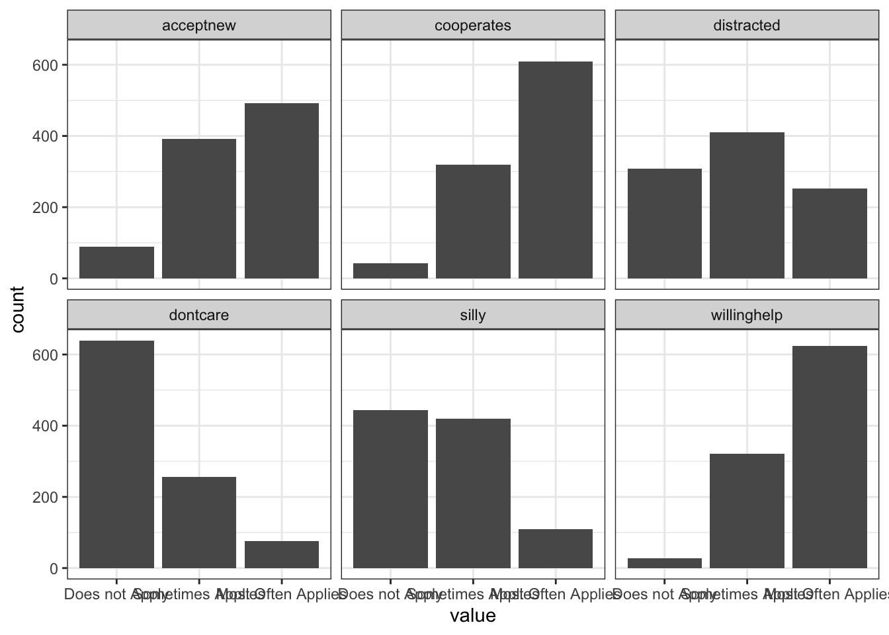
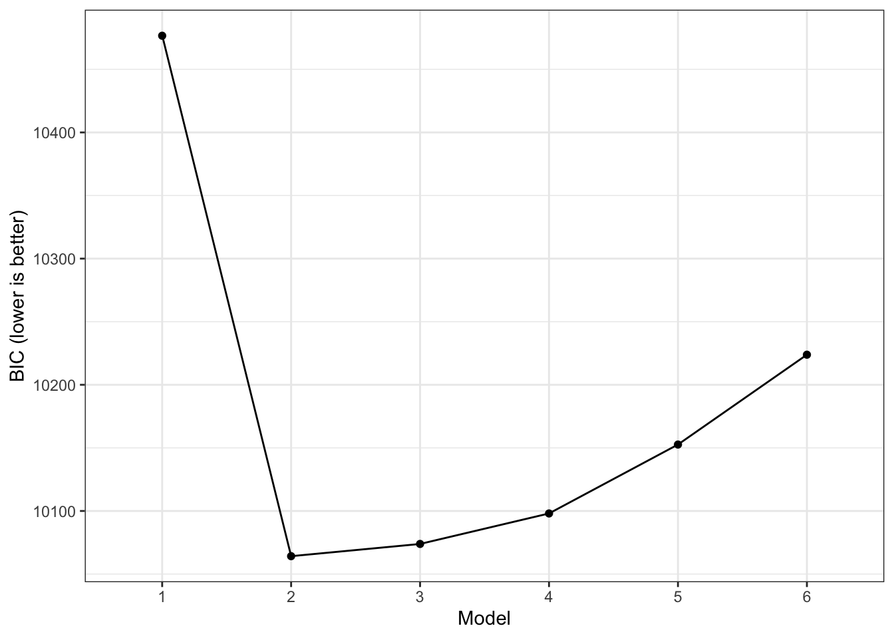
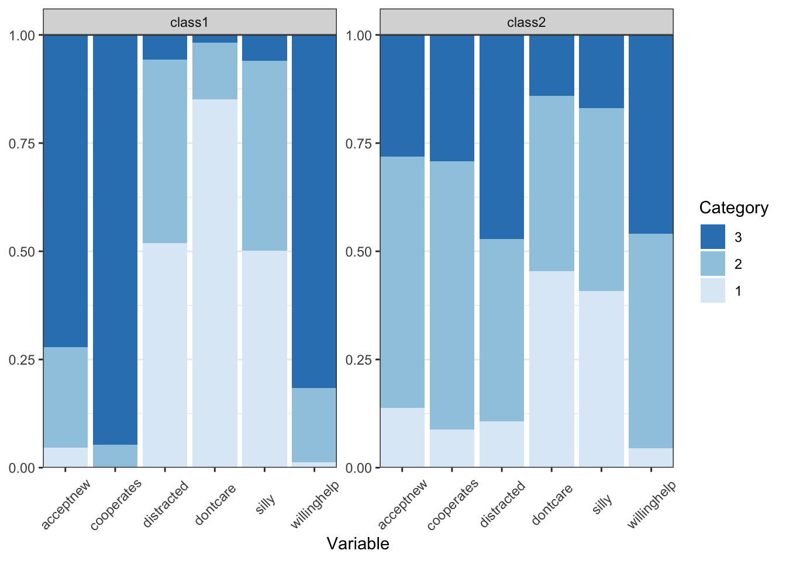

library(tidySEM)
library(dplyr)
library(tidyr)
library(ggplot2)12 Latent Class Analysis
12.1 Loading R Packages
Load the required packages for this lab into your R environment.
12.2 Loading Data
Load the data into your environment. For this lab we will use a dataset based on N = 972 children whose caregivers completed a survey about their socio-emotional development. You can download the data by right-clicking this link and selecting “Save Link As…” in the drop-down menu: data/preschool.csv. Make sure to save it in the folder you are using for this class.
The full dataset and more information about this project can be found here: https://ldbase.org/datasets/38d4a723-c167-4908-a250-2cf29a4ff49b.
plbs <- read.csv("data/preschool.csv")
plbs <- plbs %>% mutate(across(everything(), ~if_else(.x == 1.5, 1, .x)),
across(everything(), ~ factor(.x,
labels = c("Does not Apply",
"Sometimes Applies",
"Most Often Applies"),
ordered = T
)
)
)
colnames(plbs) <- c("dontcare", "cooperates", "distracted", "willinghelp", "silly", "acceptnew")We will focus on six items of the Preschool Learning Behaviors Scale (PLBS). Here are the items:
- Adopts a don’t care attitude to success and failure.
- Cooperates in group activities.
- Is distracted too easily by what is going on in the room, or seeks distractions.
- Is willing to be helped.
- Invents silly ways of doing things
- Accepts new activities without fear or resistance
Caregivers could respond with one of three options: Does Not Apply, Sometimes Applies, Most Often Applies.
The tidySEM package has a function descriptives() that we can use to get some basic descriptive statistics for our items:
desc <- descriptives(plbs)
desc <- desc[, c("name", "n", "missing", "unique", "mode", "mode_value")]
desc name n missing unique mode mode_value
1 dontcare 972 0 4 639 Does not Apply
2 cooperates 972 0 4 610 Most Often Applies
3 distracted 972 0 4 411 Sometimes Applies
4 willinghelp 972 0 4 624 Most Often Applies
5 silly 972 0 4 443 Does not Apply
6 acceptnew 972 0 4 492 Most Often AppliesWe can also use ggplot() to visualize the distribution of item responses:
plbs_plot <- plbs
plbs_plot <- pivot_longer(plbs_plot, everything())
ggplot(plbs_plot, aes(x = value)) +
geom_histogram(stat="count") +
facet_wrap(~name) +
theme_bw()
12.3 Estimate range of latent class solutions
We typically come into an LCA with some theory-based expectations for how many classes might exist in the population. In addition, our overall sample size might put some restrictions on how many classes can feasibly be estimated.
set.seed(9710)
res <- mx_lca(data = plbs, classes = 1:6)
saveRDS(res, file = "data/LCA_results.RDS")Instead of running the code below, you can download the results by right-clicking here and saving it into the data folder.
res <- readRDS("data/LCA_results.RDS")12.4 Class Solution Comparison
fit <- table_fit(res) # model fit table
fit[, c("Name", "LL", "Parameters", "n","AIC", "BIC", "saBIC", "Entropy", "prob_min",
"prob_max", "n_min", "n_max", "np_ratio", "np_local")] Name LL Parameters n AIC BIC saBIC Entropy
1 1 -5197.036 12 972 10418.072 10476.62 10438.512 1.0000000
2 2 -4946.100 25 972 9942.199 10064.18 9984.783 0.6514148
3 3 -4906.229 38 972 9888.457 10073.87 9953.185 0.6825587
4 4 -4873.592 51 972 9849.184 10098.03 9936.056 0.6264103
5 5 -4856.184 64 972 9840.367 10152.65 9949.382 0.6686257
6 6 -4847.063 77 972 9848.126 10223.84 9979.284 0.7046337
prob_min prob_max n_min n_max np_ratio np_local
1 1.0000000 1.0000000 1.00000000 1.0000000 81.00000 81.000000
2 0.8918582 0.9022232 0.49588477 0.5041152 38.88000 40.166667
3 0.6625695 0.9015618 0.08436214 0.5000000 25.57895 6.833333
4 0.6602120 0.8180830 0.04629630 0.3456790 19.05882 3.750000
5 0.7194970 0.8397305 0.04320988 0.3364198 15.18750 3.500000
6 0.5899152 0.8377095 0.02366255 0.3353909 12.62338 1.916667What class solution is preferred according to the BIC?
We might want to explore additional class solutions, but we can see that, starting with four classes, there are < 5 observations per parameter in every class, which is quite low, especially given the total sample size. Estimating additional classes may cause the model to not be identified within classes. We can visualize the drop in BIC across class solutions using the plot() function:
plot(fit)
The output above also gives us information about the entropy of the model. This value provides a summary of class separation. It actually represents \(1-entropyy\) but most people who use it for mixture models report it as simply entropy. If entropy is 0, there is no separations between classes, their response distributions overlap fully. If entropy is 1, all classes are fully separated, their response distributions are completely separated. So, higher values are preferred.
Lo-Mendell-Rubin Likelihood Ratio Test
We can also use the Lo-Mendell-Rubin Likelihood Ratio Test (LMR-LRT) to make pairwise comparisons across model solutions to test the Null hypothesis that two class solutions have equivalent fit (so a p-value < .05 indicates that one model fits better than the other).
lr_lmr(res)Lo-Mendell-Rubin adjusted Likelihood Ratio Test:
null alt lr df p w2 p_w2
mix1 mix2 10.5 13 2.22e-16 0.588 2.22e-16
mix2 mix3 NA NA NA NA NA
mix3 mix4 NA NA NA NA NA
mix4 mix5 NA NA NA NA NA
mix5 mix6 NA NA NA NA NABootstrapped Likelihood Ratio Test
An alternative to the LMR-LRT is the bootstrapped likelihood ratio test. This approach is very computationally expensive (i.e., slow), so we only ask for 10 bootstrapped samples here. For a publication you should use a much higher number (1000+). You can use packages such as the future package to use multiple CPUs and speed things up with parallel computing.
set.seed(1)
res_blrt <- BLRT(res, replications = 5)12.5 Interpreting Final Model Results
Before interpreting final estimates, we reorder the latent classes so that they are arranged from largest to smallest:
res_final <- mx_switch_labels(res[[2]])Classification Diagnostics
We can look at several indicators of classification accuracy and reliability. First, we can look at how many individuals are classified into each class based on their highest posterior probability:
class_prob(res_final, type = "sum.mostlikely") # assumes no classification error$sum.mostlikely
class count proportion
1 class1 490 0.5041152
2 class2 482 0.4958848The estimates above assume that each participant is classified into the correct class (does not incorporate any uncertainty). We can also ask for estimates that do account for that uncertainty. If there is no classification error (i.e., every person is classified into 1 class with 100% certainty), the above table would be identical to the below table (which does account for error):
class_prob(res_final, type = "sum.posterior") # includes classification error$sum.posterior
class count proportion
1 class1 497.3807 0.5117086
2 class2 474.6193 0.4882914#class_prob(res_final, type = "individual") # classification probabilities for each individualAre there any major differences between the two classification tables? What does that say about the severity of classification errors?
Next, we can use a cross-table to understand the certainty of our classifications better. Again, we can either ignore classification error, using the functions below:
class_prob(res_final, type = "mostlikely.class") # values on diagonal should be > .7$mostlikely.class
assigned.1 assigned.2
avgprob.1 0.89185824 0.1081418
avgprob.2 0.09777682 0.9022232Or we can include classification error, using the function below:
class_prob(res_final, type = "avg.mostlikely") # values on diagonal should be > .7$avg.mostlikely
meanprob.class1 meanprob.class2
assigned.1 0.9052924 0.09470764
assigned.2 0.1115926 0.88840737For both tables, values on the diagonal represent classification certainty and should be close to 1.
For which of these classes is classification certainty lowest?
Parameter Estimates
Now that we’ve evaluated the classification diagnostics, we can interpret the parameter estimates, using the table_results() function. With ordinal indicators in LCA, the most relevant estimates are the thresholds. Finding differences in thresholds across classes indicates that persons in different classes switch from one response to the next at a different point along the latent response scale. The code below allows us to focus on those Thresholds:
table_results(res_final, columns = c("label", "est", "confint",
"class")) %>% filter(stringr::str_detect(label, "Thresholds")) %>%
mutate(label = stringr::str_split_i(label, "\\.", 2)) %>%
pivot_wider(id_cols = label, names_from = class, values_from = est:confint, names_vary = "slowest")# A tibble: 12 × 5
label est_class1 confint_class1 est_class2 confint_class2
<chr> <chr> <chr> <chr> <chr>
1 Thresholds[1,1] 1.04 [0.85, 1.24] -0.12 [-0.26, 0.02]
2 Thresholds[1,2] -2.86 [-3.91, -1.80] -1.35 [-1.52, -1.18]
3 Thresholds[1,3] 0.05 [-0.10, 0.20] -1.24 [-1.45, -1.03]
4 Thresholds[1,4] -2.26 [-2.60, -1.91] -1.70 [-1.91, -1.49]
5 Thresholds[1,5] 0.00 [-0.12, 0.13] -0.23 [-0.36, -0.11]
6 Thresholds[1,6] -1.69 [-1.90, -1.47] -1.09 [-1.25, -0.94]
7 Thresholds[2,1] 2.10 [1.69, 2.52] 1.07 [0.92, 1.23]
8 Thresholds[2,2] -1.62 [-2.02, -1.21] 0.55 [0.34, 0.75]
9 Thresholds[2,3] 1.58 [1.26, 1.91] 0.07 [-0.07, 0.21]
10 Thresholds[2,4] -0.90 [-1.06, -0.74] 0.10 [-0.04, 0.24]
11 Thresholds[2,5] 1.56 [1.34, 1.78] 0.96 [0.81, 1.11]
12 Thresholds[2,6] -0.59 [-0.74, -0.43] 0.58 [0.42, 0.74] To make it easier to see if response patterns vary across classes, we can use the table_prob() function, which transforms the thresholds into response probabilities. These do not come with a confidence interval, so ideally you first examine the thresholds to note relevant differences across classes and then look at these probabilities to see what they really mean:
table_prob(res_final) %>%
pivot_wider(names_from = group,
values_from = Probability)# A tibble: 18 × 4
Variable Category class1 class2
<chr> <int> <dbl> <dbl>
1 dontcare 1 0.852 0.454
2 dontcare 2 0.131 0.405
3 dontcare 3 0.0178 0.141
4 cooperates 1 0.00213 0.0884
5 cooperates 2 0.0507 0.619
6 cooperates 3 0.947 0.293
7 distracted 1 0.519 0.107
8 distracted 2 0.424 0.422
9 distracted 3 0.0569 0.471
10 willinghelp 1 0.0120 0.0443
11 willinghelp 2 0.173 0.496
12 willinghelp 3 0.815 0.460
13 silly 1 0.502 0.408
14 silly 2 0.439 0.423
15 silly 3 0.0597 0.169
16 acceptnew 1 0.0457 0.138
17 acceptnew 2 0.233 0.581
18 acceptnew 3 0.721 0.281 The threshold results above indicate that all thresholds are significantly different across classes (this aligns with the very high entropy for this class solution). Focusing on the response probabilities, it appears that caregivers in class 1 are more likely to endorse positive learning behaviors (cooperates, wiling to accept help, accept new), whereas caregivers in class 2 are more likely to endorse negative learning behaviors (don’t care, distracted). The two classes’ responses are similar for the silly item.
Visualize the classes
Tables can provide a lot of detail, but it can be challenging to unnderstand the bigger picture. That’s why we like to visualize response patterns of the latent classes. The plot_prob() function includes all classes in one plot, using subplots. The theme() element was added to make the item labels more readable.
plot_prob(res_final) +
theme(axis.text.x = element_text(angle=45, vjust = 0.5))
What label would you give each of these classes?
12.6 Predicting membership for new individuals
Finally, you can use the LCA results to predict most likely class membership of new cases, as long as you have their scores on the indicator items. Below, I define a new participant (using an existing case from the original sample so the variables are ordered factors) who has a somewhat inconsistent class (e.g., the distracted item Sometimes Applies):
plbs_new <- plbs[10,]
plbs_new dontcare cooperates distracted willinghelp
10 Does not Apply Most Often Applies Sometimes Applies Most Often Applies
silly acceptnew
10 Does not Apply Sometimes Appliespredict(res_final, newdata = plbs_new)Running mix2 with 0 parameters class1 class2 predicted
[1,] 0.8485255 0.1514745 112.7 Summary
In this R lab, you were introduced to the steps involved in specifying, estimating, evaluating, comparing and interpreting the results of latent class analyses. For now, this is the final lab for this class!